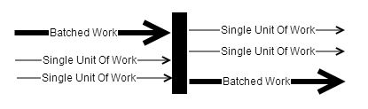
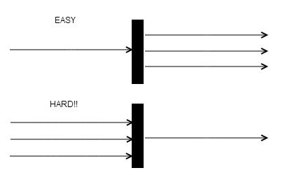
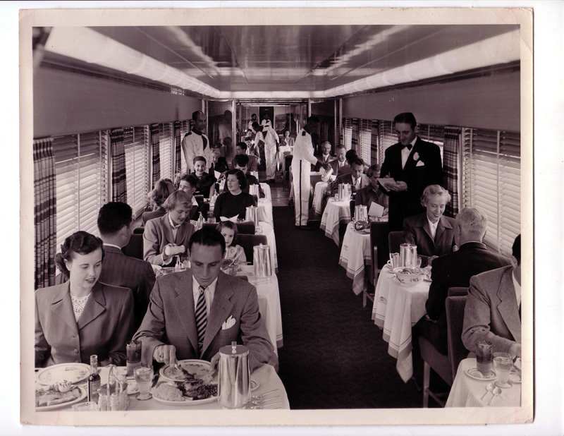
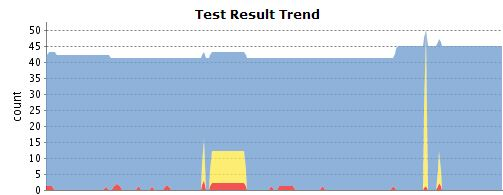

C*@ING
Train Management
Created by Christopher Reedijk (@creedijk) and Gary Stewart (@Gaz_GandA)
Dev Engineers, ING Netherlands

ING Nederland (@ingnl)
 |
 |
|
| Christopher Reedijk | Gary Stewart | |
|
|
Improve availability
without trading consistency
Aim to be easier scalable
Adopt new ways of thinking
Availability is easier
Performance is easier
Consistency is harder
Lets talk about consistency
as it is supposed to be harder!

|
|

Easy - Split batches into single units
Hard - Single units collected into a batch file
Commonly known as Synchronize Issue
Challenging in a distributed
world even more so when masterless!

e.g. Oracle, Postgres
1 Query
SELECT .... FOR UPDATE
FROM .... a
JOIN .... b ON a. = b. //optional
WHERE status = 'NEW'
AND timestamp between ... and ...
AND rownum < X
NO WAIT
DONE - thank you for your time...
Hang on - what about scalability, resilience and availability?
Will infra solve that? Too easy :-)
SELECT .... FOR UPDATE
FROM .... a
JOIN .... b ON a. = b. //optional
WHERE status = 'NEW'
AND timestamp between ... and ...
AND rownum < X
NO WAIT
"FOR UPDATE" No - C* - No client side locking
"WHERE" Filtering on status and timestamps = tricky
e.g. could use clustering columns
Table scan over partitions - C* = slow(er)
Large partitions can be cumbersome
Not looking good for C* :-(
Sucker for pain
let's try this in C* anyway
Remember the goal is to improve availability
without trading consistency
View the problem differently
Application should have more responsibility
What if we track the size of the 'file'
To use an analogy
|  |
we will call out-going files - trains And single units of work - passengers |
NO LOCK - locking is
overrated right?
SELECT TrainTotal FROM TrainTotal WHERE trainid = ?
BEGIN BATCH
INSERT INTO TrainPassenger (TrainId, PassengerId) VALUES (?,?);
UPDATE TrainTotal SET TrainTotal = ? WHERE TrainId = ?;
APPLY BATCH
CREATE TABLE TrainTotal ( CREATE TABLE TrainPassenger (
TrainId text, TrainId text,
TrainTotal int, PassengerId text,
PRIMARY KEY ( TrainId ) PRIMARY KEY ( TrainId, PassengerId)
); );
Assign passenger to train
Keep total of trainsize in TrainTotal table
Requires read before write
Read current size before writing new size
Is this consistent? In sequence this would be perfect
Expected results: TrainTotal and TrainPassenger out-of-sync
COUNTERS - cool C* feature
INSERT INTO TrainPassenger (TrainId, PassengerId) VALUES (?,?);
UPDATE Traincounter SET TrainTotal = TrainTotal + 1 WHERE TrainId = ?;
CREATE TABLE TrainCounter ( CREATE TABLE TrainPassenger (
TrainId text, TrainId text,
TrainTotal counter, PassengerId text,
PRIMARY KEY ( TrainId ) PRIMARY KEY ( TrainId, PassengerId)
); );
No client-side read-before-write
Separate table - not allowed in batches
with other statements
Is this consistent?
Document says - Counters are made for this
but overcounts are possible
Expected results: TrainCounter and TrainPassenger are in-sync
PAXOS - lightweight tranaction in C* (since v2)
SELECT TrainTotal FROM TrainTotal WHERE trainid = ?
UPDATE TrainTotal SET TrainTotal = ? WHERE trainid = ? IF TrainTotal= ?;
if [applied] == true then INSERT INTO TrainPassenger (TrainId, PassengerId)
VALUES (?,?);
CREATE TABLE TrainTotal ( CREATE TABLE TrainPassenger (
TrainId text, TrainId text,
TrainTotal int, PassengerId text,
PRIMARY KEY ( TrainId ) PRIMARY KEY ( TrainId, PassengerId)
); );
Still need a read-before-write
Even though the document says use for 1% of your application
- use wisely - costs are high
Lightweight in features BUT not in 'execution'
We don't need 100.000 tps so this should be fine - possible solution!
Expected results: Consistent but slower
CARRIAGES - lets break the problem into chunks
BEGIN BATCH
INSERT INTO TrainPassenger (TrainId, PassengerId) VALUES (?,?);
UPDATE TrainTotal SET TrainTotal = ? WHERE TrainId = ?;
APPLY BATCH
CREATE TABLE TrainTotal ( CREATE TABLE TrainPassenger (
TrainId text, TrainId text,
TrainTotal int, PassengerId text,
PRIMARY KEY ( TrainId ) PRIMARY KEY ( TrainId, PassengerId)
); );
Trains and carriages
Each application is responsible for their own carriage
Board Carriage instead of train
No read-before-write - application knows it's carriage size
All statements fit in a batch - atomic
Expected results: Consistent and fast but requires more logic
So now we have options -
let's test them out
No Lock
Counter
Paxos
Carriages


Datastax Community C* v2.0.6
Gatling performance tester
4 users each doing 250 runs
Call each step in a sequence
Test Results

cqlsh:meetup> select * from traintotal; cqlsh:meetup> select * from traincounter;
trainid | traintotal trainid | traintotal
---------------+------------ ---------+------------
carriage_3001 | 400 counter | 1000
paxos | 659
carriage_3000 | 600
no_lock | 930
See anything interesting???
Great, so application fills up the carriage
but what about the trains
Carriage capacity is kept in application
When carriage is FULL - Attach to train and create new one
Any action on train requires cluster wide locking to ensure consistency!
Cluster Locks
Basically needed to ensure no-one else is working on the object - train
Only applications will fight for the lock - not threads
Use TTL to ensure locks are not kept endlessly
Aquire Cluster Lock
lockid = UuidGenerator.generate();
INSERT INTO clusterlock (name, lockid) values ( ?, ?) IF NOT EXISTS USING TTL ?;
if (rows.get(0).getBool('[applied]') ) {
return lockid.toString();
} else {
return NOK;
}
CREATE TABLE ClusterLock ( Name text, LockId text, Hostname text, PRIMARY KEY ( Name ) );
Refresh Cluster Lock
UPDATE clusterlock USING TTL ? SET lockid=? WHERE name= ? IF lockid=?;
if (rows.get(0).getBool('[applied]') ) {
return OK;
} else {
return NOK;
}
CREATE TABLE ClusterLock ( Name text, LockId text, Hostname text, PRIMARY KEY ( Name ) );
Release Cluster Lock
DELETE FROM clusterlock WHERE name= ? IF lockid=?;
if (rows.get(0).getBool('[applied]') ) {
return OK;
} else {
return NOK;
}
CREATE TABLE ClusterLock ( Name text, LockId text, Hostname text, PRIMARY KEY ( Name ) );
Train departure - requires cluster lock
Depot - table of all unlinked carriages - should be empty helps with error situations
Scheduling - based on deadlines etc...
Maintenance - ensure that all operations are running smoothly - complete the feedback loop
More responsibility in the application results in more scalable solution
Reduced contention in the cluster
MUCH more responsibility in application
Get it right - rewards are great
Get it wrong - penalties can be huge
Is it worth it?
Only you can decide
Hailo and NetFlix are deploying in new countries
within weeks without code change
One final piece of advice:
test ALL features you are using
Ensures that upgrades will be easier and safer!
Paxos + TTL combined did not work after a minor upgrade
We spotted this issue within hours after an upgrade of our cluster
Jira Cassandra 6801
Datastax solved it within a week
Thank you
...graceful bowContact
gary.stewart@ing.nl
christopher.reedijk@ing.nl
We're hiring!
this presentation is created using:
reveal.js